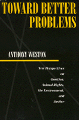

A philosopher proposes a pragmatic approach to tackle contemporary moral problems
A philosopher proposes a pragmatic approach to tackle contemporary moral problems


 A philosopher proposes a pragmatic approach to tackle contemporary moral problems
A philosopher proposes a pragmatic approach to tackle contemporary moral problems

|  |
Toward Better ProblemsNew Perspectives on Abortion, Animal Rights, the Environment, and JusticeAnthony Westonpaper EAN: 978-0-87722-948-3 (ISBN: 0-87722-948-1) |
"Toward Better Problems is a work of considerable merit.... [Weston] is effective in showing how the 'theoretical' approach obscures the real values at issue and hinders their realization."
—James Gouinlock, Emory University
In Toward Better Problems, Anthony Weston develops a pragmatic approach to the pressing moral issues of our time. Weston seeks to address practical problems in the spirit of John Dewey: that is, by focusing on specific human concerns and multiple, overlapping values rather than on abstract philosophical principles. Weston showcases his method in sustained discussion of four highly controversial areas: abortion, animal rights, environmentalism, and justice.
Weston takes up uncomfortable issues, such as how we raise food animals; test medicines, cosmetics, and chemicals on animals; and justify speciesism. He engages philosophically the treatment of land and seas as limitless garbage dumps, the creation of radioactive wastes and their disposal, and fundamental problems of social justice. But Weston's aim is not to "solve" such problems as if they were some kind of puzzle. The aim instead is to creatively transform such problematic situations into something more promising and tractable, thereby leaving us with "better problems."
Preface
1. Practical Ethics in a New Key
2. Pragmatic Attitudes
From Puzzles to Problematic Situations •
Reconstructive Strategies •
Integrative Strategies
3. Rethinking the Abortion Debate
Against Drawing Lines •
Multiple Relevant values •
Deciding the Question: An Integrative Approach •
Social Reconstruction and the Abortion Debate
4. Other Animals
"Speciesism" •
Outlines of an Integrative Approach •
Reconstructing the Human Relation to Other Animals
5. The Environment
The Need for Environmental Ethics •
"Intrinsic Values" in Nature? •
Integrating Environmental Values: Toward an Ecology of Values •
Reconstruction in Environmental Ethics
6. Justice
Justice in Problematic Situations: Between the Prevailing Paradigms •
Some Integrative Methods •
A Reconstructive View: Beyond the Justice Debate
7. Conclusion
The Question of Critical Standpoint •
The Question of Optimism
Notes
Index
 | Anthony Weston teaches Philosophy at State University of New York, Stony Brook and is the author of A Rulebook for Arguments. |
Ethics and Action, edited by Tom Regan.
No longer active.
© 2015 Temple University. All Rights Reserved. This page: http://www.temple.edu/tempress/titles/895_reg.html.